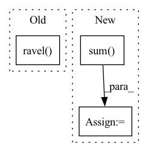

Pattern ID :40521

Before Change
P = img[X,Y].ravel()
cofx,cofy = center_of_mass(img)
Xn = ( (X -cofx)/radius).ravel()
Yn = ( (Y -cofx)/radius).ravel()
k = (np.sqrt(Xn**2 + Yn**2) <= 1.)
frac_center = np.array(P[k], np.double)/img.sum()
Yn = Yn[k]
Xn = Xn[k]
After Change
Xn = ( (X -cofx)/radius).ravel()
k = (np.sqrt(Xn**2 + Yn**2) <= 1.)
frac_center = np.array(P[k], np.double)
frac_center /= frac_center.sum()
Yn = Yn[k]
Xn = Xn[k]
frac_center = frac_center.ravel()
In pattern: SUPERPATTERN
Frequency: 3
Non-data size: 3
Instances
Fragment ID: 114760454
Project Name: luispedro/mahotas
Commit Name: 9a7723cbc0930b2240bf2b64932ddb4c61e3d356
Time: 2010-09-01
Author: lpc@cmu.edu
File Name: tests/test_zernike.py
M Class Name: AnonimousClass
N Class Name: AnonimousClass
M Method Name: _slow_zernike(3)
N Method Name: _slow_zernike(3)
M Parent Class:
N Parent Class:
M File Name: tests/test_zernike.py
N File Name: tests/test_zernike.py
M Start Line: 28
M End Line: 46
N Start Line: 29
N End Line: 48
'>
Before Change
angles = np.linspace(0, 2*np.pi, points+1)[:-1]
coordinates = np.empty((2, points, Y.size), float)
for i,(dy,dx) in enumerate(zip(radius * np.sin(angles), radius * np.cos(angles))):
coordinates[0][i] = Y.ravel()
coordinates[1][i] = X.ravel()
coordinates[0][i] += dy
coordinates[1][i] += dx
data = map_coordinates(image, coordinates.reshape((2,-1)), order=1).reshape((Y.size, -1))
After Change
data.append(
select(shift(image, [radius*dy,radius*dx], order=1)))
data = np.array(data)
codes = (data > pixels).sum(0)
codes = mahotas._lbp.map(codes.astype(np.uint32), points)
final = fullhistogram(codes.astype(np.uint32))
codes = np.arange(2**points, dtype=np.uint32)
'>
Fragment ID: 114760452
Project Name: luispedro/mahotas
Commit Name: 63f0ae590daddb229b6937579f20742f9fc3003c
Time: 2011-11-27
Author: lpc@cmu.edu
File Name: mahotas/lbp.py
M Class Name: AnonimousClass
N Class Name: AnonimousClass
M Method Name: lbp(4)
N Method Name: lbp(4)
M Parent Class:
N Parent Class:
M File Name: mahotas/lbp.py
N File Name: mahotas/lbp.py
M Start Line: 66
M End Line: 76
N Start Line: 65
N End Line: 74
'>
Before Change
pr = _threshold(pr, threshold=threshold)
pr, gt = _take_channels(pr, gt, ignore_channels=ignore_channels)
tn, fp, fn, tp = confusion_matrix(gt.data.cpu().numpy().flatten(),
pr.data.cpu().numpy().flatten()).ravel()
score = ((tp + eps) / (tp + fp + fn + eps) + (tn + eps) / (tn + fp + fn + eps)) / 2
score = torch.tensor(score)
After Change
pr = _threshold(pr, threshold=threshold)
pr, gt = _take_channels(pr, gt, ignore_channels=ignore_channels)
tp = torch.sum(gt * pr)
fp = torch.sum(pr) - tp
fn = torch.sum(gt) - tp
tn = torch.sum(gt == pr, dtype=pr.dtype) - tp
'>
Fragment ID: 114760447
Project Name: likyoo/change_detection.pytorch
Commit Name: c455ba49826b224428d6e095992d25cbe1b6260d
Time: 2021-08-09
Author: 1150249769@qq.com
File Name: change_detection_pytorch/utils/functional.py
M Class Name: AnonimousClass
N Class Name: AnonimousClass
M Method Name: binary_miou(5)
N Method Name: binary_miou(5)
M Parent Class:
N Parent Class:
M File Name: change_detection_pytorch/utils/functional.py
N File Name: change_detection_pytorch/utils/functional.py
M Start Line: 141
M End Line: 148
N Start Line: 141
N End Line: 147